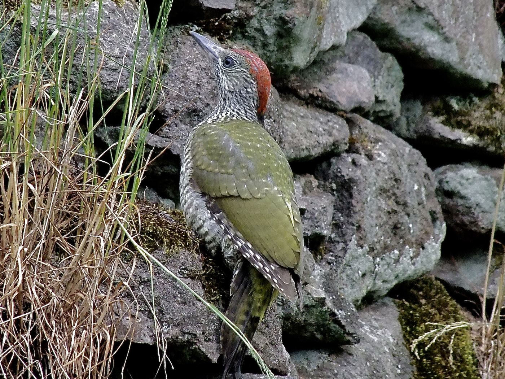

Wirbeltiere › Vögel › Spechtvögel › Spechte
Picus viridis

Was du siehst: Ein junger Grünspecht an einer Trockenmauer – Jungvögel sind noch kräftig gesprenkelt.
Foto: Michael Baur · CC BY-NC
Der Grünspecht sucht seine Nahrung meist auf Wiesen und Rasen. Er hackt Löcher in Ameisenhaufen und holt mit seiner sehr langen, klebrigen Zunge Ameisen und ihre Puppen heraus. Die Zunge reicht etwa zehn Zentimeter über die Schnabelspitze hinaus.
Sein Ruf klingt wie ein lautes Gelächter: „klü-klü-klü-klü“. Er schallt im Frühjahr weit über Obstwiesen und Parks.
Liegt Schnee, gräbt der Grünspecht tiefe Gänge, um an die Ameisennester darunter zu kommen.
Foto Michael Baur, CC BY-NC · Texte Fauna Mibaso. Die Artseite ist Endpunkt im Stammbaum und Nachschlagewerk zum Vogelpass auf bio.mibaso.de.